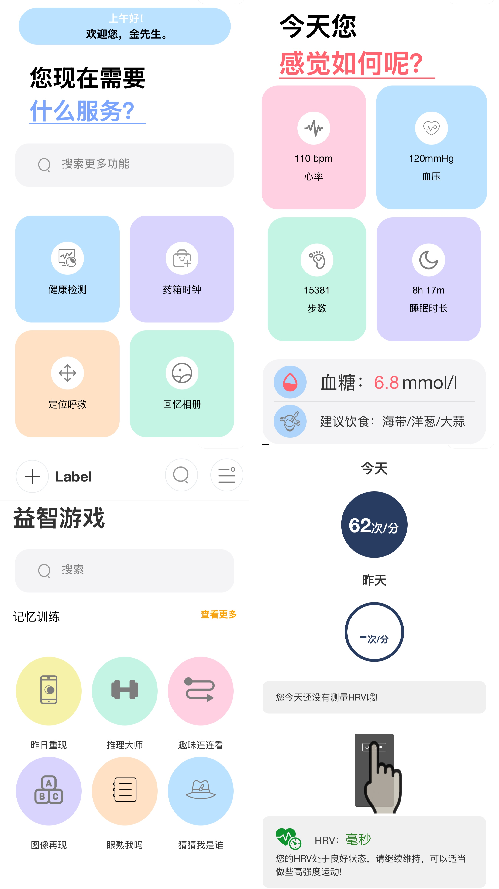

脑肿瘤自动分割系统
基于多模态 MRI 的 3D 脑肿瘤自动分割，涉及数据预处理、文献调研、改进 TU-Net / Transformer 架构与评估指标跟踪。
MRI3D SegmentationTransformerDice 0.92
Medical AI · Undergraduate Research
本科期间参加国家级大创，做的是医学图像分割。同时，作为负责人开发一套阿尔茨海默病陪护软件。这段经历让我从纯算法走到了能动手做产品。

Research Projects
基于多模态 MRI 的 3D 脑肿瘤自动分割，涉及数据预处理、文献调研、改进 TU-Net / Transformer 架构与评估指标跟踪。
智能手环加 APP 的陪护方案，家里和病房都能看到老人状态，跟医学院的同学一起做的。
Method
围绕医学图像分割与智能医疗场景进行论文、模型结构和评估指标梳理。
处理多模态 MRI 数据，关注数据质量、标注一致性和训练输入规范化。
围绕 TU-Net / Transformer 类架构进行实验迭代，用 Dice 等指标评价分割效果。
海默之声把医学场景落成了手环加 App 的方案，算是第一次完整走完从算法到产品的过程。
Project Materials
 软件著作权证书 · 阿尔茨海默病智能陪护系统
软件著作权证书 · 阿尔茨海默病智能陪护系统